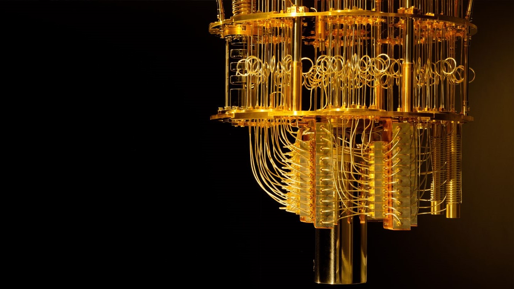
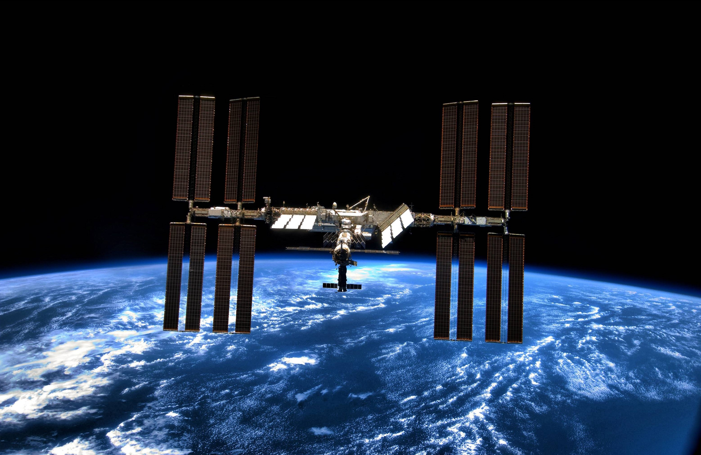
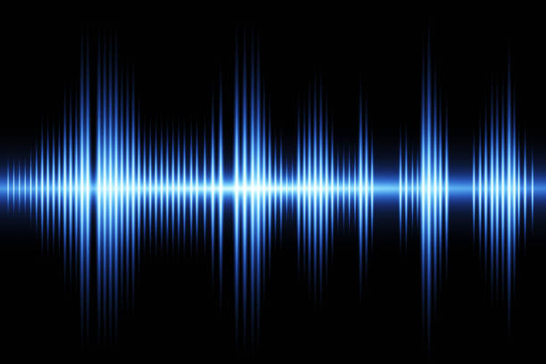

Calculations & Navigation:

Computers perform many autonomous functions without human command. The most important task being guiding the rocket
on its path using satellite imaging, cameras and advanced math. The computer will figure out the rocket’s relative
position to the final destination, figure out the required trajectory, and fire boosters to stay on the path.
Furthermore, they account for the impact of phenomena such as gravity, air resistance, drag and fuel consumption.
Isn’t it amazing to think computers can do all that!
A computer also manages internal functions that keep the system and humans safe and running. Computers use sensors and
detectors to calculate functional components such as O2 levels, pressure, temperature and pressure. Life systems regulation
is crucial since even the slightest of changes can be recorded and accounted for. All these systems work in tandem to ensure
the safety of both the people on board as well as the success of the mission.
Interstellar maneuvers are one of the most fascinating things outside the world. A computer can calculate velocity,
rotational momentum, weight and drag to perfectly fire a booster for a specific amount of time to change its angle
and maneuver. Without computers, all these calculations would have to be done by hand, and as you might expect, would
take much longer. On top of the extra resources required, the slightest of miscalculations could cost billions of dollars.
Computers' role in interstellar maneuvars are imperataive to the sucess of any mission and they are irreplacable.

Getting to space is one thing, docking with a space station is a whole different ordeal. It's like trying to find a
needle in a haystack, only your needle is flying around the haystack faster than a bullet and you are the size of an
ant. Pretty straightforward stuff. Just kidding, the feat of extraterrestrial docking would be impossible save for
computer assistance. The onboard computers calculate the exact velocity, distance and time of Rendez-Vous, and navigate
the shuttle to its destination. Now it's like finding a needle in a haystack with a magnet the size of the haystack!

Although computers handle more tasks than we can give them credit for, they still need supervision from ground control.
For this, computers send and receive periodic messages to and from ground control. The messages sent to ground control
consist of system diagnostics, flight projections, and other data obtained by the shuttle. Ground control keeps the
computer systems in check and updates the information regarding the environment of the shuttle. Space exploration is
hardly a human task, it is a joined effort between man and machine to explore the universe.
